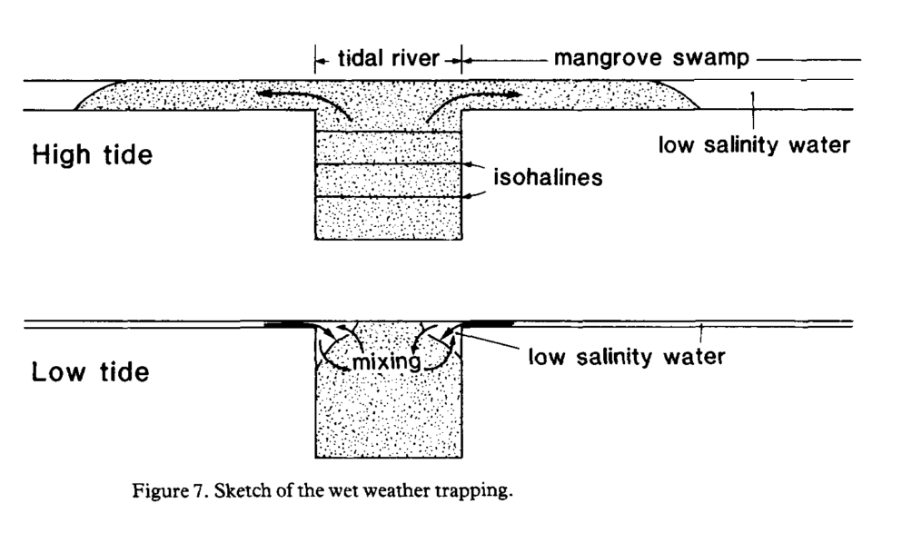

4.3 Sedimentation and hydrology
4.3.1 Preface
4.3.2 Wolanski, 1980
“Hydrodynamics of a tidal creek-mangrove swamp system” (Wolanski, Jones, and Bunt 1980)
4.3.3 Wolanski, 1986
“*Tidal mixing and trapping in mangrove swamps“* (Wolanski and Ridd 1986)
Key contribution: This study primarily seeks to answer two key questions:
- What parameters control export of salt left after evapotranspiration of tidal waters by mangrove trees?
- How do rivers influence the growth of mangroves?
There is a lot of mathematical hydrological modeling that is over my head in this study, but there are some relevant ecological points that are worth noting.
Key results: Some key results from the study include:
- The “trapping mechanism” is the dominant parameter controlling “longitudinal dispersion” in their study swamp. They conclude that it is likely the dominant mechanism in many swamps in the absence of large buoyancy effects (i.e., dry seasons)
- Buoyancy effects are important due to trapping of freshwater in the swamp at high tide and boundary layer that enters the river banks at low tide
- Residence time of runoff in mangrove swamps may be quite long with important ecological implications, such as nutrient uptake and settling of fine sediments
A diagram of the “trapping mechanism” of fresh water in the landward portion of swamps is shown below:

Further reading: This study led to some questions that may be important for understanding soil formation in mangroves. In particular:
- What is the “trapping mechanism” in estuarine hydrodynamics?
- What are the specific processes of tidal mixing and what is the broader relevance for the ecology of mangroves?
- What is longitudinal dispersion in relation to mangroves?
- What are the specific implications of buoyancy effects, and how do they vary between dry and wet seasons?
4.3.4 Wolanski, 1992
“Mangrove hydrodynamics” (In Robertson and Alongi, 1992)
4.3.5 Furukawa, 1996
“Sedimentation in mangrove forests” (Furukawa and Wolanski 1996)
Key significance: Furukawa and Wolanski show through an empirical study that a sediment pump from coastal waters to the mangrove interior does exist.
They find that the presence of a tidal pump is largely due to:
- High turbulence that maintains entrainment of fine sediments during flood tide.
- Settlement of flocculated sediment during slack high tide in which turbulence is reduced.
- Insufficient ebb tide velocities to resuspend settled sediment.
**Key notes:**
Water velocity of tidal flooding in a mangrove forest can be described as:
\[ u = 1/n\ *\ h^{2/3}\ *\ I^{1/2} \]
Where:
- u: water velocity
- n: Mannings friction coefficient
- h: water depth
- I: water surface slope
Typical values for the Mannings friction coefficient for sandy channels are in the range of 0.025-0.035, whereas empirical studies by Wolanski have found values as high as 0.2 - 0.4 for areas with mangrove vegetation. Thus, mangrove vegetation increases the Mannings friction coefficient by several orders of magnitude.
This results in a failure to resuspend fine sediments that are deposited during slack high tide and thus promotes build-up of sediment.
Consideration of floc size is important for sedimentation studies within mangroves. In calculating the settling velocity (via Stoke’s law) for both individual particles of clay and silt, as well as that of mean floc size measured within the tidal water, settlement of flocs was found to be approximately 100 times larger than for individual particles (0.005 m/s).
Empirical measurements in the field showed that for tree species with complex matrices of aboveground roots, turbulence was intense enough to maintain flocs in suspension. For single stemmed trees without root systems (e.g., Bruguiera or Ceriops), both turbulence and flow velocity are reduced.
4.3.6 Furukawa, 1997
“Currents and sediment transport in mangrove forests” (Furukawa, Wolanski, and Mueller 1997)
Key contribution: A sister study to (Furukawa and Wolanski 1996), this study describes the empirical data collected to investigate current flows and suspended sediment characteristics of a mangrove in Australia.
Research design: Water level, currents, sedimentation (via sediment traps and Analite nephelometers (upward looking cameras)), suspended sediment levels (via water samples), and concentration of flocs (via microscopic slides with wells) were measured along a transect in the forest, at varying distances from a tidal creek.
The data were compared against three hydrological models to investigate the accuracy of mathematical modelling of hydrodynamics and sedimentation in mangroves, as well as analyze the empirical data for the site. The models were:
- 2DSWAMP - flow model based on primitive equations of motion
- LAKE - a lake model that assumes flat water surface and determines flow rate
- VORTEX - a discrete vortex model that provides information on turbulence
Key findings:
The LAKE model performed poorly and was not used within in the subsequent analyses (unrealistic assumption that the surface water is flat).
Suspended sediment concentration showed strong asymmetry in that concentration was higher at flood tibe and much lower at ebb tide. This is indicative of net inwelling of sediment into the mangrove.
Sedimentation rates decreased with distance from the tidal creek. In calculating the sedimentation velocity, the median floc size (90 micrometers) was approximately 4 times that of size of solid minerals (24 micrometers) given high porosity of flocs. Visual investigation of suspended sediment reveals that much of the flocs had settled out of the water column following slack high tide.
Vegetation greatly increased turbulence and created a complex set of hydrological effects (eddies, stagnant regions, and jets).
DOC was found to vary inversely with tidal depth, with the lowest DOC concentration present during slack high tide. Furthermore DOC in the forest was found to be greater than coastal waters, indicating that both creek and mangrove waters are significant sources of DOC.
The findings suggest a net inwelling of DOC in the forest (greater DOC concentration during flood tide than ebb tide), but this does not corroborate with other analyses.
4.3.7 van Maren, 2013
“The role of flow asymmetry and mud properties on tidal flat sedimentation”
References
Wolanski, E, M Jones, and JS Bunt. 1980. “Hydrodynamics of a Tidal Creek-Mangrove Swamp System.” Marine and Freshwater Research 31 (4): 431–50. doi:10.1071/MF9800431.
Wolanski, Eric, and Peter Ridd. 1986. “Tidal Mixing and Trapping in Mangrove Swamps.” Estuarine, Coastal and Shelf Science 23 (6): 759–71. doi:10.1016/0272-7714(86)90073-9.
Furukawa, Keita, and Eric Wolanski. 1996. “Sedimentation in Mangrove Forests.” Mangroves and Salt Marshes 1 (1): 3–10.
Furukawa, K, E Wolanski, and H Mueller. 1997. “Currents and Sediment Transport in Mangrove Forests.” Estuarine, Coastal and Shelf Science 44 (3): 301–10. doi:10.1006/ecss.1996.0120.